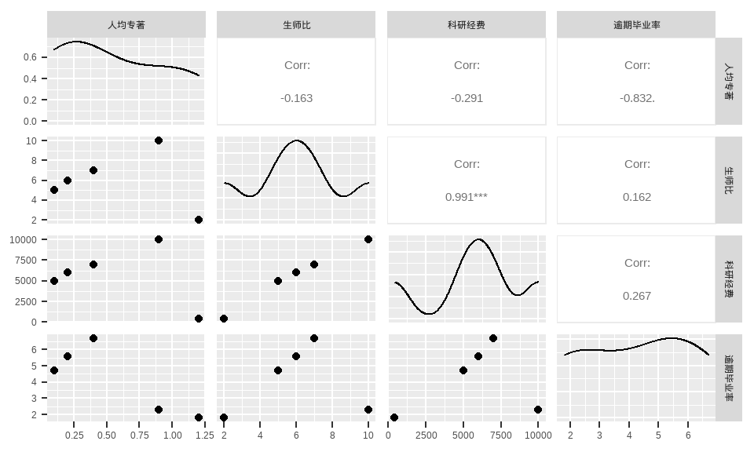
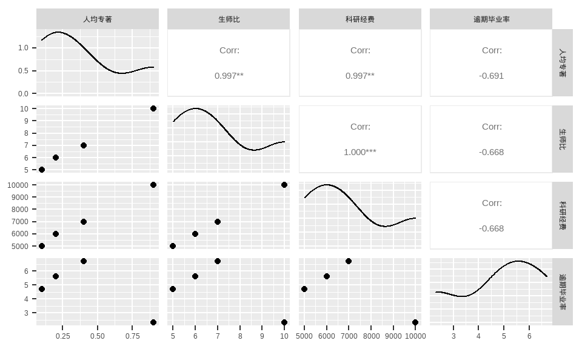
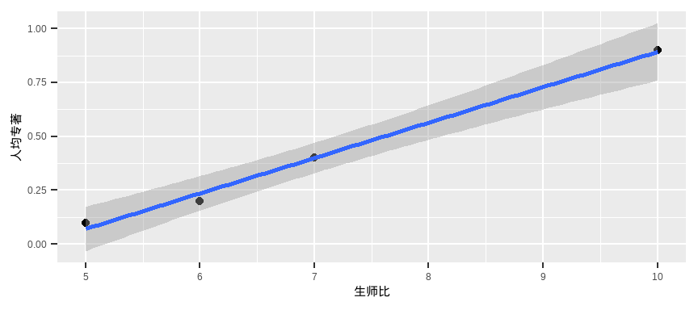
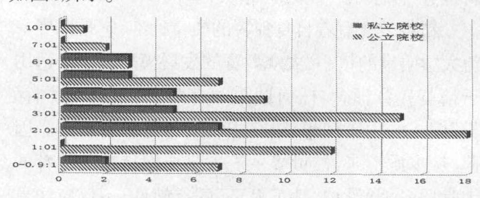

For school work.
一、问题重述
问题背景
为客观评价我国研究生教育实际状况与各研究生院教学质量，需要先抽取小样本进行试评估。所收集的数据如表1.
| 人均专著 | 生师比 | 科研经费 | 逾期毕业率 |
|---|---|---|---|
| 0.1 | 5 | 5000 | 4.7 |
| 0.2 | 6 | 6000 | 5.6 |
| 0.4 | 7 | 7000 | 6.7 |
| 0.9 | 10 | 10000 | 2.3 |
| 1.2 | 2 | 400 | 1.8 |
问题提出
试对样本中5个院校实力进行评估，最终给出院校排名。
二、问题分析
本题为典型的小样本评估问题，对其分析如下：. 所给样本数据的四个属性中，人均专著与科研经费带有不同的量纲，应在模型的建立中进行规范化（去量纲）处理；. 之后为方便比较，需要将各属性数据进行不同的加权操作，而具体权数有待后续确定；. 就类型而言，人均专著与科研经费为效益型属性，逾期毕业率为成本型属性，而生师比的类型也待后续进行确定。
三、模型假设
. 所给数据具有一定的代表性；
. 本次评估的标杆为世界一流院校。
四、符号说明
| 符号 | 说明 |
|---|---|
| $a_{ij}$ | 原数据表中第$i$行第$j$列元素的值 |
| $b_{ij}$ | 标准化后数据表中第$i$行第$j$列元素的值 |
| $\sigma_j$ | 标准化后数据表第$j$列的样本标准差 |
| $p_{ij}$ | 第$j$项指标下第$i$个样本值占该指标的比重 |
| $e_j$ | 第$j$项指标的熵值 |
| $d_j$ | 信息熵冗余度（差异） |
| $w_j$ | 第$j$列所加权数 |
| $c_{ij}$ | 加权后的数据表中第$i$行第$j$列元素的值 |
| $c^*$ | 正理想解 |
| $c^0$ | 负理想解 |
| $s_i^*$ | 第$i$行数据到正理想解的距离 |
| $s_i^0$ | 第$i$行数据到负理想解的距离 |
| $f_i^*$ | 第$i$行数据综合指标值 |
五、模型的建立与求解
数据的分析
本文首先对数据中各属性指标间的相关性进行了可视化（图1）。

发现院校生师比与科研经费的相关系数高达0.991。然后经计算得出各院校人均的科研经费依次（从第一行数据所代表院校到最后一行数据所代表院校）为1000、1000、1000、1000、200万元/年。由此可知第五行数据相较其他更为特殊。观察原数据表能够发现第五个院校除了科研经费较少外，其余各项属性指标均非常优异，大大强于另外四者。可以猜测此学校类型为弱工科院校。本文预先将其定为院校排名的第一名，并将其在后续的分析数据中剔除。
| 人均专著 | 生师比 | 科研经费 | 逾期毕业率 |
|---|---|---|---|
| 0.1 | 5 | 5000 | 4.7 |
| 0.2 | 6 | 6000 | 5.6 |
| 0.4 | 7 | 7000 | 6.7 |
| 0.9 | 10 | 10000 | 2.3 |
在剔除第五行数据后，再此对该数据的相关性进行可视化如图2.

可以看出现在生师比与人均专著也展现出了极高的相关性。本文对这两个属性指标进行了回归拟合可视化（图3）。

由图像可以看出数据拟合得很好。既如此，我们以后便可根据一个学校生师比的值推测出其人均专著与科研经费的值。假若结果与预测相差较远，那么可认为这个学校应该有其特别之处。当然，仅根据四行数据进行的立论是不可靠的，但一定程度上也具有参考价值。
模型的准备
查阅相关资料[1]，国际一流大学的生师比所在区间一般为[2, 4]，就目前所剩数据（剔除第五行后）而言，无一达到。而该资料中也表明，生师比在10以内都可以接受。资料中有世界一流大学生师比数据统计如图4.

可以看出（本文只参考了统计图中公立院校的数据），一流大学的生师比集中在2左右，为偏态分布。为确定本文模型生师比加权系数，本文根据参考资料对世界一流大学的调查统计图进行了数据复现并 对其进行了伽马分布拟合，拟合结果其基本服从\(X\sim Ga(2.256,0.797)\)，拟合效果如图5.

\(p(x)\)为\(X\sim Ga(2.256,0.797)\)的密度函数，\(p(x)\)越小，则其为好学校的概率越小。将其值作为新的生师比列的值，为效益型属性。
| 人均专著 | 生师比 | 科研经费 | 逾期毕业率 |
|---|---|---|---|
| 0.1 | 0.074 | 5000 | 4.7 |
| 0.2 | 0.042 | 6000 | 5.6 |
| 0.4 | 0.023 | 7000 | 6.7 |
| 0.9 | 0.003 | 10000 | 2.3 |
模型的建立与求解
由于本文所采用标准化方法与加权方法数量较多，故本文先给出这些数据处理方法，然后仅在模型一中进行详细描述，而后续模型的建立与求解只需带入相应公式即可，本文将略去这些繁琐的细节。
数据处理方法
标准化方面
本文所采用的两种标准化方法与对应公式分别为：
min-max标准化法：
\[\begin{equation} b_{i j} = \left(\frac{a_{i j}-\min a_{i j}}{\max a_{i j}-\min a_{i j}}\right). \end{equation}\]Z-score标准化法：
\[\begin{equation} b_{ij} = \frac{a_{ij}-\overline{a}_{j}}{\sigma_j} = \frac{a_{ij}-\overline{a}_{j}}{\sqrt{\frac{1}{m-1}\sum_{i=1}^{m}(a_{ij}-\overline{a}_j)^2}}. \end{equation}\]赋权方面
本文所采用的三种客观赋权法与对应公式分别为：
变异系数法：
\[\begin{equation} w_j=\frac{\sigma_j}{\overline{b}_j} \end{equation}\] \[\begin{equation} c_{ij} = w_j\times b_{ij}. \end{equation}\]均方差法：
\[\begin{equation} w_j=\frac{\sigma_j}{\sum_{j=1}^4 \sigma_j}\\ \end{equation}\]\[ c_{ij} = w_j\times b_{ij}. \]
熵权法：
\[\begin{equation} p_{i j}=\frac{b_{i j}}{\sum_{i=1}^{n} b_{i j}}, \quad i=1, \cdots, n, j=1, \cdots, m. \end{equation}\] \[\begin{equation} e_{j}=-k \sum_{i=1}^{n} p_{i j} \ln \left(p_{i j}\right), \quad j=1, \cdots, m . \end{equation}\]其中，\(k=\frac{1}{\ln (n)>0}.\) 满足\(e_{j} \geq 0\)
\[\begin{equation} d_{j}=1-e_{j}, \quad j=1, \cdots, m. \end{equation}\] \[\begin{equation} w_j=\frac{d_j}{\sum_{j=1}^{m}d_j}, \quad j=1, \cdots, m. \end{equation}\]\[ c_{ij} = w_j\times b_{ij}. \]
模型一的建立
模型一采用的标准化方法为min-max法，采用的加权方法为变异系数法。
由min-max法标准化公式(1)： \[ b_{i j} = \left(\frac{a_{i j}-\min a_{i j}}{\max a_{i j}-\min a_{i j}}\right). \]
可得标准化后的数据如表4.
| 人均专著 | 生师比 | 科研经费 | 逾期毕业率 |
|---|---|---|---|
| 0.000 | 1.000 | 0.0 | 0.545 |
| 0.125 | 0.547 | 0.2 | 0.750 |
| 0.375 | 0.278 | 0.4 | 1.000 |
| 1.000 | 0.000 | 1.0 | 0.000 |
由变异系数法加权公式(2)：
\[ w_j=\frac{\sigma_j}{\overline{a}_j},\ \ j = 1,2 \]
\[ c_{ij} = w_j\times a_{ij}. \]
可得加权后的数据如表5.
| 人均专著 | 生师比 | 科研经费 | 逾期毕业率 |
|---|---|---|---|
| 0.000 | 0.933 | 0.000 | 0.404 |
| 0.148 | 0.510 | 0.216 | 0.556 |
| 0.445 | 0.259 | 0.432 | 0.741 |
| 1.186 | 0.000 | 1.080 | 0.000 |
模型一的求解
理想解法相关公式有以下：
· 正理想解：
\[\begin{equation} c_j^*=\begin{cases} \max c_{ij},\ \ j为效益型属性\\ \min c_{ij},\ \ j为成本型属性. \end{cases} \end{equation}\]
· 负理想解：
\[\begin{equation} c_j^0=\begin{cases} \min c_{ij},\ \ j为效益型属性\\ \max c_{ij},\ \ j为成本型属性. \end{cases} \end{equation}\]
· 到正理想解的距离：
\[\begin{equation} s_i^*=\sqrt{\sum_{j=1}^n(c_{ij}-c_j^*)^2} \end{equation}\]
· 到负理想解的距离：
\[\begin{equation} s_i^0=\sqrt{\sum_{j=1}^n(c_{ij}-c_j^0)^2} \end{equation}\]
· 综合指标值：
\[\begin{equation} f_i^*=\frac{s_i^0}{s_i^0+s_i^*} \end{equation}\]
由表5可以看出正理想解为：
(1.19, 0.93, 1.08, 0.0)负理想解为：
(0.0, 0.0, 0.0, 0.74)由正负理想解带入公式得到的数据如表6.
| $s^*$ | $s^0$ | $f^*$ |
|---|---|---|
| 1.655 | 0.992 | 0.375 |
| 1.521 | 0.603 | 0.284 |
| 1.405 | 0.672 | 0.324 |
| 0.933 | 1.767 | 0.654 |
最终结果：5>4>1>3>2
模型二的建立与求解
模型二采用的标准化方法为min-max法，采用的加权方法为均方差法。
现直接给出标准化并加权后的数据如表7.
| 人均专著 | 生师比 | 科研经费 | 逾期毕业率 |
|---|---|---|---|
| 0.000 | 0.246 | 0.00 | 0.134 |
| 0.032 | 0.135 | 0.05 | 0.185 |
| 0.097 | 0.068 | 0.10 | 0.246 |
| 0.257 | 0.000 | 0.25 | 0.000 |
然后给出对应理想解的数据如表8.
| $s^*$ | $s^0$ | $f^*$ |
|---|---|---|
| 0.383 | 0.271 | 0.414 |
| 0.371 | 0.160 | 0.301 |
| 0.375 | 0.155 | 0.292 |
| 0.246 | 0.435 | 0.639 |
最终结果：5>4>1>2>3
模型三的建立与求解
模型三采用的标准化方法为min-max法，采用的加权方法为熵权法。
现直接给出标准化并加权后的数据如表9.
| 人均专著 | 生师比 | 科研经费 | 逾期毕业率 |
|---|---|---|---|
| 0.000 | 0.230 | 0.000 | 0.097 |
| 0.040 | 0.126 | 0.055 | 0.134 |
| 0.119 | 0.064 | 0.110 | 0.179 |
| 0.317 | 0.000 | 0.274 | 0.000 |
然后给出对应理想解的数据如表10.
| $s^*$ | $s^0$ | $f^*$ |
|---|---|---|
| 0.429 | 0.244 | 0.362 |
| 0.392 | 0.149 | 0.276 |
| 0.354 | 0.173 | 0.329 |
| 0.230 | 0.455 | 0.664 |
最终结果：5>4>1>2>3
模型四的建立与求解
模型四采用的标准化方法为Z-score法，采用的加权方法为变异系数法。
现直接给出标准化并加权后的数据如表11.
| 人均专著 | 生师比 | 科研经费 | 逾期毕业率 |
|---|---|---|---|
| 1.14e+16 | 4.60e+16 | 5.00e+16 | 6.28e+14 |
| 7.59e+15 | 7.66e+15 | 2.50e+16 | -3.89e+15 |
| 0.00e+00 | -1.51e+16 | 0.00e+00 | -9.42e+15 |
| -1.90e+16 | -3.86e+16 | -7.51e+16 | 1.27e+16 |
然后给出对应理想解的数据如表12.
| $s^*$ | $s^0$ | $f^*$ |
|---|---|---|
| 1.00e+16 | 1.55e+17 | 0.939 |
| 4.63e+16 | 1.15e+17 | 0.712 |
| 7.98e+16 | 8.39e+16 | 0.512 |
| 1.56e+17 | 0.00e+00 | 0.000 |
最终结果：5>1>2>3>4
模型五的建立与求解
模型五采用的标准化方法为Z-score法，采用的加权方法为均方差法。
现直接给出标准化并加权后的数据如表13.
| 人均专著 | 生师比 | 科研经费 | 逾期毕业率 |
|---|---|---|---|
| -0.182 | 0.277 | -0.200 | -0.014 |
| -0.122 | 0.046 | -0.100 | 0.090 |
| 0.000 | -0.091 | 0.000 | 0.217 |
| 0.304 | -0.232 | 0.301 | -0.292 |
然后给出对应理想解的数据如表14.
| $s^*$ | $s^0$ | $f^*$ |
|---|---|---|
| 0.752 | 0.559 | 0.426 |
| 0.735 | 0.327 | 0.308 |
| 0.760 | 0.306 | 0.287 |
| 0.509 | 0.864 | 0.630 |
最终结果：5>4>1>2>3
七、模型的评价、改进与推广
模型的优点
经由相关分析，人为剔除了与其他院校相差较大的第五所院校的数据，有一定道理。且该处理相当于消除极端值，减小了后面使用客观赋权法进行建模的误差；
以一流大学的生师比数据为依据并拟合其分布，将原数据的生师比依概率赋值，较为合理；
使用五个基于客观赋权法的模型结果进行平均得出了最后结果，较为有信服力。
模型的缺点
人为剔除第五个院校的数据较为武断，缺乏更有力的资料支撑；
由相关资料[2]，小样本数据使用客观赋权法效果通常不理想，对于院校评价这样复杂的模型，需要结合专家的经验性看法才能得到较好的评估效果。
模型的推广与改进
本文对数据的指标进行了相关性分析，得出生师比、科研经费、人均专著间具有强相关关系。如有需求，可拟合相应回归方程，并根据其中一项的值来预测另外两项，如此便能由预测值与实际值的差距来对院校做额外的评估，比如评估该院校的相应指标是否处于正常范围等等。
本文未包含主观赋权法的最大原因是在于找不到可信服的专家制定的权数，如有更多时间，可以在寻求专家权数方面多做努力。
参考文献
[1]范哗.大众化进程中的生师比与大学质量关系——世界一流大学生师比研究的启示[J].教育发展研究,2012,32(23):8-15.DOI:10.14121/j.cnki.1008-3855.2012.23.005.
[2]李健宁. 高等学校学科竞争力评价研究[D].华东师范大学,2004.
[3]郭显光.熵值法及其在综合评价中的应用[J].财贸研究,1994(06):56-60.DOI:10.19337/j.cnki.34-1093/f.1994.06.014.
[4]赵静, 但琦. 数学建模与数学实验（第五版）[M]. 高等教育出版社, 北京, 2020.